Proxemics is the study of how people interact. We present a computational formulation of visual proxemics by attempting to label each pair of people in an image with a subset of physically based touch codes. A baseline approach would be to first perform pose estimation and then detect the touch codes based on the estimated joint locations. We found that this sequential approach does not perform well because pose estimation step is too unreliable for images of interacting people, due to difficulties with occlusion and limb ambiguities. Instead, we propose a direct approach where we build an articulated model tuned for each touch code. Each such model contains two people, connected in an appropriate manner for the touch code in question. We fit this model to the image and then base classification on the fitting error. Experiments show that this approach significantly outperforms the sequential baseline as well as other related approches.
Yi Yang, Simon Baker, Anitha Kannan, Deva Ramanan. Recognizing Proxemics in Personal Photos. IEEE Conference on Computer Vision and Pattern Recognition (CVPR), Rhode Island, USA, 2012.
| 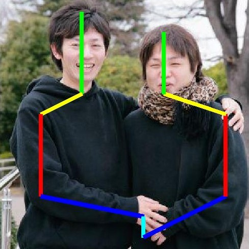 | 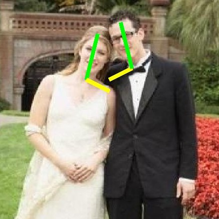 | 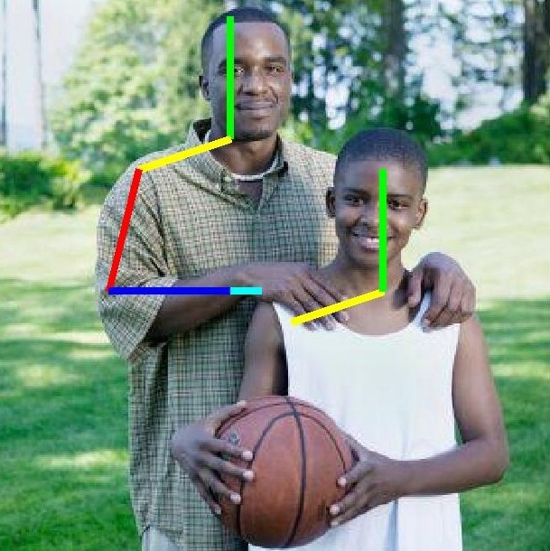 | 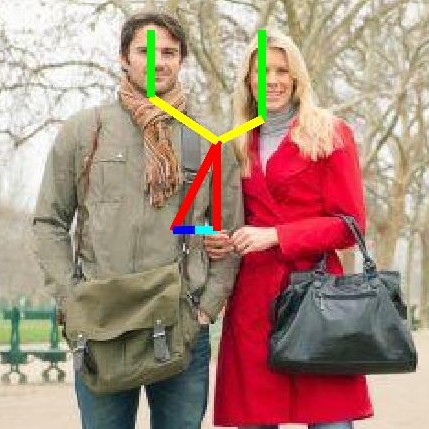 | 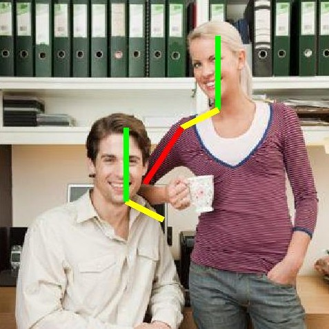 | 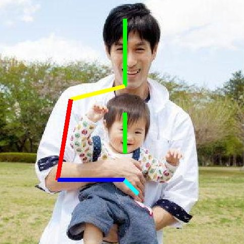 |
| 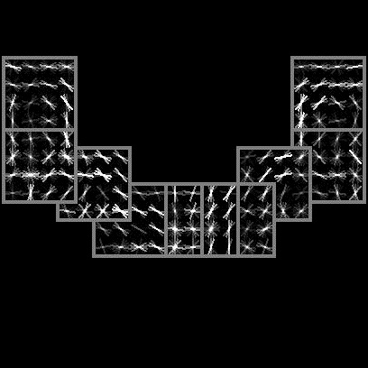 | 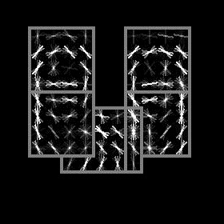 | 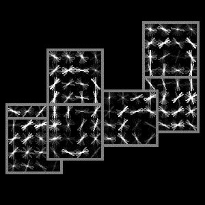 | 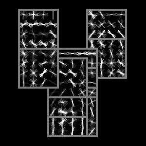 | 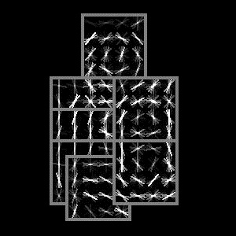 | 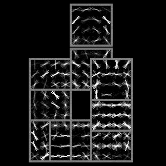 |